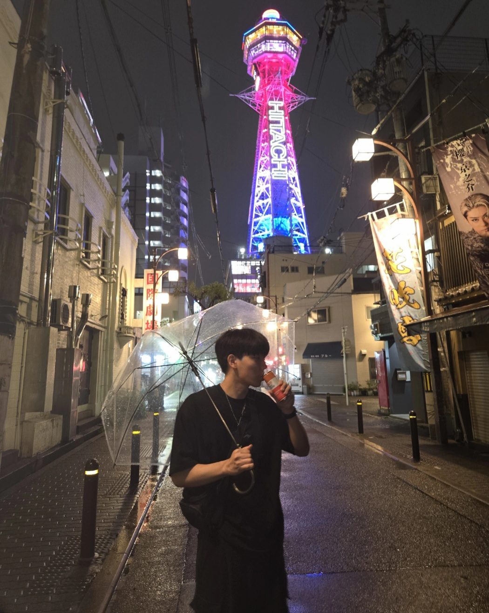

Engineering Science • Aerospace Major
I’m an Engineering Science student specializing in Aerospace Engineering at the University of Toronto. I'm interested in fluid dynamics and CFD, propulsion, and aircraft design.
View My Work
Summer research with Prof. Chaudhuri on contrails, coaxial jet mixing, jet engines, etc., (Pratt & Whitney sponsored). Characterized and analyzed the role of turbulent mixing and supersaturation fluctuations in contrail formation through modelling turbofan exhaust as a coaxial jet in OpenFOAM by developing an LES CFD sim.
Quantitative and qualitative comparisons of RK4, Euler-type methods, and physics-informed neural networks on nonlinear ODE systems using the Brusselator model.
Aerodynamic analysis, CAD, and R&D for wing design and prop wash interactions on a VTOL aircraft that finished podium at the international SAE Aero Design Advanced Class Competition.
UofT autonomous rover team. Arm subteam work involving CAD design of gears, arm linkages, and elbow assemblies.
Designed and built a desktop wind tunnel for flow visualization and experimental aerodynamics. Currently redesigning with detailed simulations.
Cyclist collision prevention system in collaboration with ARC Toronto, including computer-vision blind spot detection, bike-frame attachment, and GPS-based intersection activation.
UofT Email: junheee.park@mail.utoronto.ca
Personal Email: junhee.park013@gmail.com
LinkedIn: linkedin.com/in/junhee-park013